연구 UI · 슬롯 도감 ¶
2026-09-26 실행 화면 및 연구 정의 기준. 6개 계열 · 활성 연구 슬롯 107개.
계열별 연구창과 상세 패널 아래에 연구 슬롯을 정리했다. 각 슬롯의 이름·아이콘·단계·기본 RP·선행 연구를 확인할 수 있다. RP는 첫 레벨 기준이며 재료 비용은 게임 상세 패널에서 별도로 확인한다.
식량 · 의료 ¶
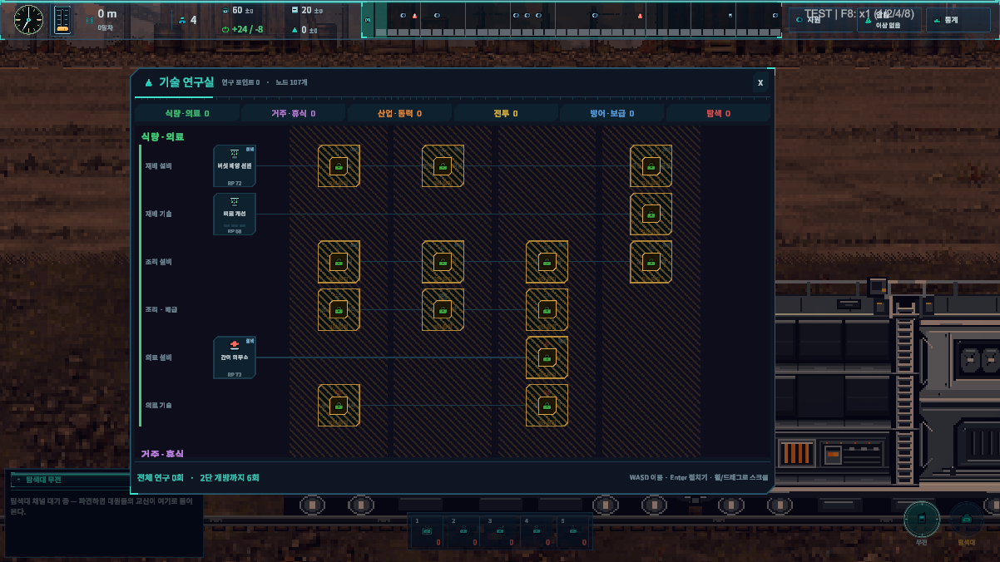
연구 선택 시 상세 패널
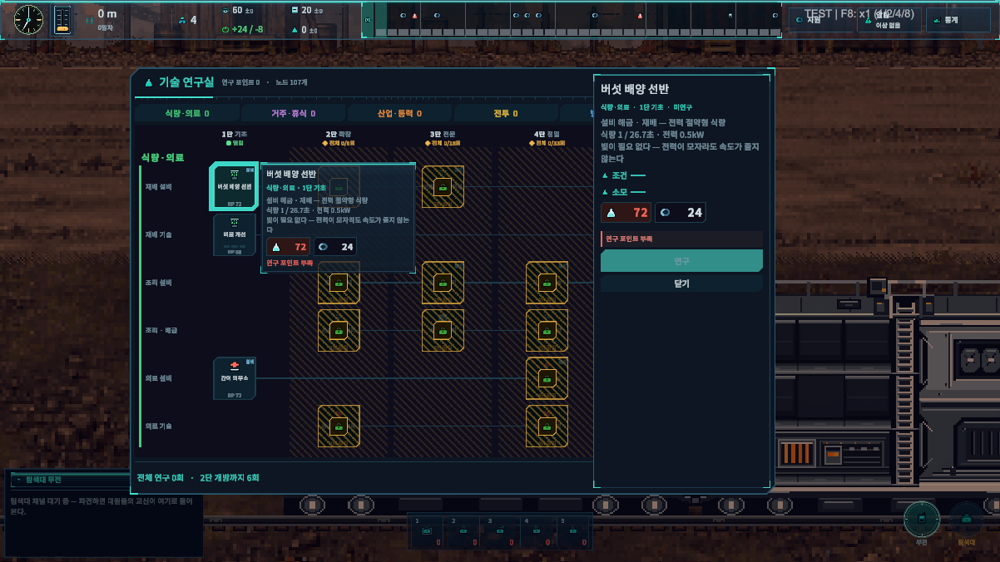
버섯 배양 선반
1단 · RP 72 · 최대 Lv.1
설비 해금 · 재배 — 전력 절약형 식량 식량 1 / 26.7초 · 전력 0.5kW 빛이 필요 없다 — 전력이 모자라도 속도가 줄지 않는다
설비 외형 · 조작 UI →조류 배양조
2단 · RP 176 · 최대 Lv.1
설비 해금 · 재배 — 고속 식량 식량 1 / 13.8초 · 전력 4.5kW 비린내 — 작업자 스트레스 +0.04/s
선행: 버섯 배양 선반
설비 외형 · 조작 UI →곤충 단백 사육장
3단 · RP 360 · 최대 Lv.1
설비 해금 · 재배 — 저전력 대량 식량 식량 1 / 10.5초 · 전력 2.5kW 혐오감 — 작업자 스트레스 +0.10/s
선행: 조류 배양조
설비 외형 · 조작 UI →유전자 배양 플랜트
5단 · RP 1040 · 최대 Lv.1
설비 해금 · 재배 — 최고 효율 식량 식량 1 / 7.7초 · 전력 7kW
선행: 곤충 단백 사육장
설비 외형 · 조작 UI →비료 개선
1단 · RP 68 · 최대 Lv.3
재배 설비의 속도가 단계마다 +16% 오른다. 같은 자리·같은 사람으로 더 거둔다.
유전자 개조
5단 · RP 975 · 최대 Lv.3
성장 주기를 편집한다. 재배 속도 +21% / 단계.
선행: 비료 개선
합성 조리대
2단 · RP 176 · 최대 Lv.1
설비 해금 · 조리 — 식량 증폭 식량 1 → 4 · 속도 ×1 · 전력 2kW
설비 외형 · 조작 UI →압력 조리기
3단 · RP 360 · 최대 Lv.1
설비 해금 · 조리 — 빠른 증폭 식량 1 → 4 · 속도 ×1.7 · 전력 3.5kW
선행: 합성 조리대
설비 외형 · 조작 UI →대량 급식 솥
4단 · RP 640 · 최대 Lv.1
설비 해금 · 조리 — 느린 대량 증폭 식량 1 → 7 · 속도 ×0.6 · 전력 2kW 고된 노동 — 작업자 스트레스 +0.05/s
선행: 압력 조리기
설비 외형 · 조작 UI →분자 조리 셀
5단 · RP 1040 · 최대 Lv.1
설비 해금 · 조리 — 최고 증폭 식량 1 → 9 · 속도 ×1.3 · 전력 5kW
선행: 대량 급식 솥
설비 외형 · 조작 UI →조리 동선 정리
2단 · RP 165 · 최대 Lv.3
조리 설비의 속도가 단계마다 +10% 오른다.
배급 최적화
3단 · RP 338 · 최대 Lv.3
1인분 식비가 단계마다 1 줄어든다(5 → 2). 사람이 늘수록 크게 듣는다.
선행: 조리 동선 정리
압력 솥 개량
4단 · RP 600 · 최대 Lv.3
조리 설비의 속도가 단계마다 +15% 오른다.
선행: 배급 최적화
간이 의무소
1단 · RP 72 · 최대 Lv.1
설비 해금 · 의료 — 초반 치료 · 소생 · 전력 1kW
설비 외형 · 조작 UI →재생 의료실
4단 · RP 640 · 최대 Lv.1
설비 해금 · 의료 — 중후반 치료 · 소생 침상 4 · 치료 8/s · 소생 재장전 60초 · 전력 6kW
선행: 간이 의무소
설비 외형 · 조작 UI →응급 처치 교육
2단 · RP 165 · 최대 Lv.3
의료 설비의 치료 속도가 단계마다 +15% 오른다.
재생 치료제
4단 · RP 600 · 최대 Lv.3
의료 설비의 치료 속도가 단계마다 +20% 오른다.
선행: 응급 처치 교육
거주 · 휴식 ¶
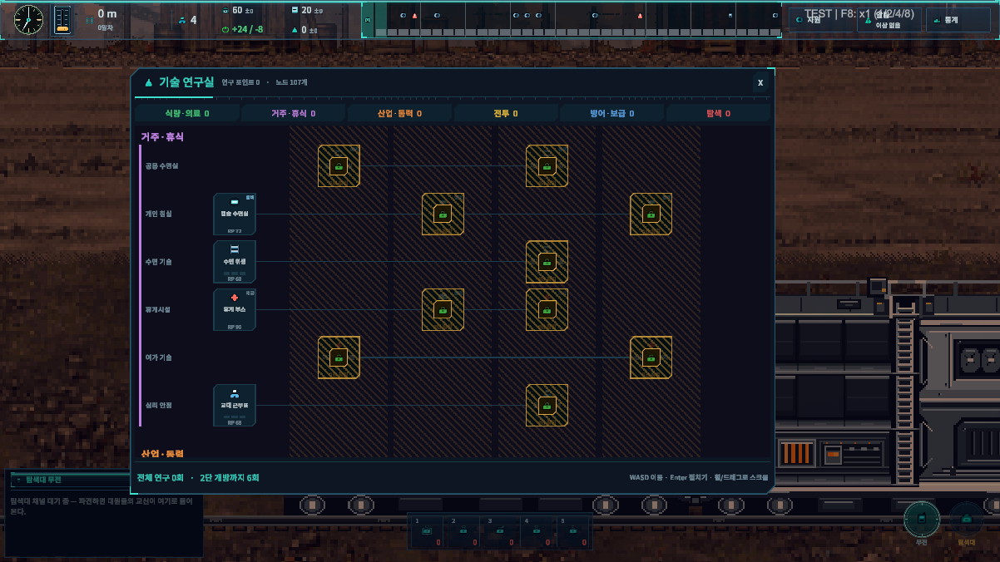
연구 선택 시 상세 패널
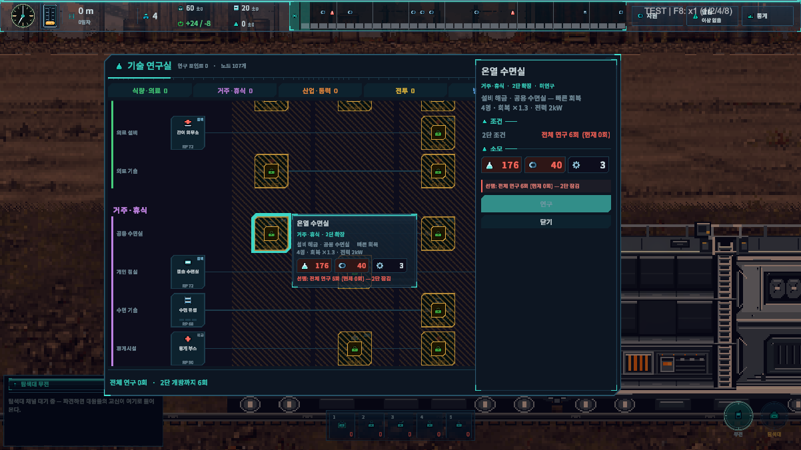
온열 수면실
2단 · RP 176 · 최대 Lv.1
설비 해금 · 공용 수면실 — 빠른 회복 4명 · 회복 ×1.3 · 전력 2kW
설비 외형 · 조작 UI →재생 수면 구획
4단 · RP 640 · 최대 Lv.1
설비 해금 · 공용 수면실 — 최고 회복 4명 · 회복 ×1.7 · 전력 4kW
선행: 온열 수면실
설비 외형 · 조작 UI →캡슐 수면실
1단 · RP 72 · 최대 Lv.1
설비 해금 · 개인 침실 — 개인 수면 구획 2명 · 회복 ×1 · 전력 1kW
설비 외형 · 조작 UI →방음 캡슐
3단 · RP 360 · 최대 Lv.1
설비 해금 · 개인 침실 — 조용한 개인실 2명 · 회복 ×1.35 · 전력 2kW
선행: 캡슐 수면실
설비 외형 · 조작 UI →동면 캡슐
5단 · RP 1040 · 최대 Lv.1
설비 해금 · 개인 침실 — 초고속 회복 2명 · 회복 ×1.75 · 전력 4kW
선행: 방음 캡슐
설비 외형 · 조작 UI →수면 위생
1단 · RP 68 · 최대 Lv.3
정해진 소등 시간. 수면 회복이 단계마다 +13%.
생체 리듬 조율
4단 · RP 600 · 최대 Lv.3
조명으로 교대조의 리듬을 맞춘다. 수면 회복 +17% / 단계.
선행: 수면 위생
휴게 부스
1단 · RP 90 · 최대 Lv.1
1칸 휴게 부스 3종 해금 — 전술 시뮬(T·J) · 홀로 오락(E·N) · 모형 조립(I·S). 2명 · 해소 0.50/s.
화분 선반
3단 · RP 360 · 최대 Lv.1
설비 해금 · 화분 — 칸 스트레스 완화 · 전력 0.5kW 같은 칸 대원의 스트레스 상승 −8%
선행: 휴게 부스
설비 외형 · 조작 UI →휴게 홀
4단 · RP 800 · 최대 Lv.1
2칸 휴게 홀 3종 해금 — 네온 바(E·F) · 온실 라운지(S·P) · 관측 라운지(I·N). 4명 · 해소 0.75/s.
선행: 화분 선반
여가 프로그램
2단 · RP 165 · 최대 Lv.3
휴게 설비의 해소량이 단계마다 +16%.
심리 상담 규약
5단 · RP 975 · 최대 Lv.3
휴게 설비의 해소량 +21% / 단계.
선행: 여가 프로그램
교대 근무표
1단 · RP 68 · 최대 Lv.3
모든 스트레스 상승이 단계마다 5% 줄어든다. 예방은 치료보다 싸다.
공동체 규약
4단 · RP 600 · 최대 Lv.3
스트레스 상승 −7% / 단계.
선행: 교대 근무표
산업 · 동력 ¶
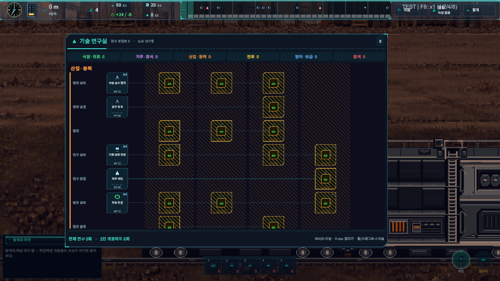
연구 선택 시 상세 패널
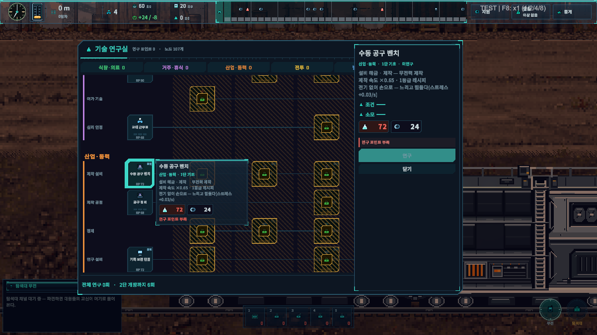
수동 공구 벤치
1단 · RP 72 · 최대 Lv.1
설비 해금 · 제작 — 무전력 제작 제작 속도 ×0.65 · 1등급 레시피 전기 없이 손으로 — 느리고 힘들다(스트레스 +0.03/s)
설비 외형 · 조작 UI →정밀 가공대
2단 · RP 176 · 최대 Lv.1
설비 해금 · 제작 — 2등급 레시피 제작 속도 ×1.2 · 2등급 레시피 · 전력 5kW
선행: 수동 공구 벤치
설비 외형 · 조작 UI →합성 프린터
3단 · RP 360 · 최대 Lv.1
설비 해금 · 제작 — 3등급 레시피 제작 속도 ×1.5 · 3등급 레시피 · 전력 6kW
선행: 정밀 가공대
설비 외형 · 조작 UI →자동 공작 셀
4단 · RP 640 · 최대 Lv.1
설비 해금 · 제작 — 4등급 · 고속 제작 제작 속도 ×2 · 4등급 레시피 · 전력 8kW 사람은 감독만 한다 — 작업자 스트레스 −0.02/s
선행: 합성 프린터
설비 외형 · 조작 UI →공구 정비
1단 · RP 68 · 최대 Lv.3
제작 설비의 속도가 단계마다 +14%.
자동 공정 제어
4단 · RP 600 · 최대 Lv.3
제작 속도 +21% / 단계.
선행: 공구 정비
정제 · 부품
2단 · RP 220 · 최대 Lv.1
제작대에서 고철 5 → 부품 1.
정제 · 합금
3단 · RP 450 · 최대 Lv.1
제작대에서 부품 5 → 합금 1.
선행: 정제 · 부품
정제 · 모듈/코어
4단 · RP 800 · 최대 Lv.1
제작대에서 합금 5 → 모듈 1, 모듈 5 → 코어 1.
선행: 정제 · 합금
기록 보관 단말
1단 · RP 72 · 최대 Lv.1
설비 해금 · 연구 — 조용한 연구 RP 1.4/s · 전력 1kW 정리 작업은 마음을 가라앉힌다 — 스트레스 −0.04/s
설비 외형 · 조작 UI →병렬 연산 랙
2단 · RP 176 · 최대 Lv.1
설비 해금 · 연구 — 고속 연구 RP 3/s · 전력 6kW
선행: 기록 보관 단말
설비 외형 · 조작 UI →시뮬레이션 코어
4단 · RP 640 · 최대 Lv.1
설비 해금 · 연구 — 대규모 연구 RP 4.4/s · 전력 8kW 끝없는 사고 실험 — 작업자 스트레스 +0.05/s
선행: 병렬 연산 랙
설비 외형 · 조작 UI →관측 데이터 링크
5단 · RP 1040 · 최대 Lv.1
설비 해금 · 연구 — 최고 연구 RP 5.8/s · 전력 11kW
선행: 시뮬레이션 코어
설비 외형 · 조작 UI →자료 색인
1단 · RP 68 · 최대 Lv.3
연구 설비의 연구 포인트 산출이 단계마다 +14%.
가설 자동화
5단 · RP 975 · 최대 Lv.3
연구 산출 +21% / 단계.
선행: 자료 색인
저속 터빈
1단 · RP 72 · 최대 Lv.1
설비 해금 · 발전 — 연료 절약형 +11kW · 연료 0.10/s (110kW·s/연료)
설비 외형 · 조작 UI →고압 연소로
2단 · RP 176 · 최대 Lv.1
설비 해금 · 발전 — 고출력 · 연비 나쁨 +36kW · 연료 0.55/s (65kW·s/연료) 연료당 전력이 가장 나쁘다(65kW·s)
선행: 저속 터빈
설비 외형 · 조작 UI →열전 회수 발전기
3단 · RP 360 · 최대 Lv.1
설비 해금 · 발전 — 고효율 발전 +27kW · 연료 0.22/s (123kW·s/연료)
선행: 고압 연소로
설비 외형 · 조작 UI →코어 반응로
5단 · RP 1040 · 최대 Lv.1
설비 해금 · 발전 — 최고 출력 +62kW · 연료 0.45/s (138kW·s/연료)
선행: 열전 회수 발전기
설비 외형 · 조작 UI →전력 정류기
2단 · RP 165 · 최대 Lv.3
발전 설비의 출력이 단계마다 +10%. 연료는 더 태우지 않는다.
자기장 코일
4단 · RP 600 · 최대 Lv.3
발전 출력 +14% / 단계.
선행: 전력 정류기
연소 최적화
2단 · RP 165 · 최대 Lv.3
발전 설비가 태우는 연료가 단계마다 5% 준다.
촉매 연소
5단 · RP 975 · 최대 Lv.3
발전 연료 −7% / 단계.
선행: 연소 최적화
집유 흡기구
1단 · RP 68 · 최대 Lv.3
주행 중 응축연료 회수가 단계마다 +22%. 달리는 동안에만 모인다.
흡기 필터
4단 · RP 600 · 최대 Lv.3
주행 집유 +23% / 단계.
선행: 집유 흡기구
추진 제어
1단 · RP 90 · 최대 Lv.1
동력코어에서 주행 속도 단계(저속·표준·고속)를 직접 조절한다.
절전 회로
2단 · RP 165 · 최대 Lv.3
모든 설비의 소비 전력이 단계마다 4% 준다.
선행: 추진 제어
부하 분산
4단 · RP 600 · 최대 Lv.3
설비 소비 전력 −5% / 단계.
선행: 절전 회로
전투 ¶
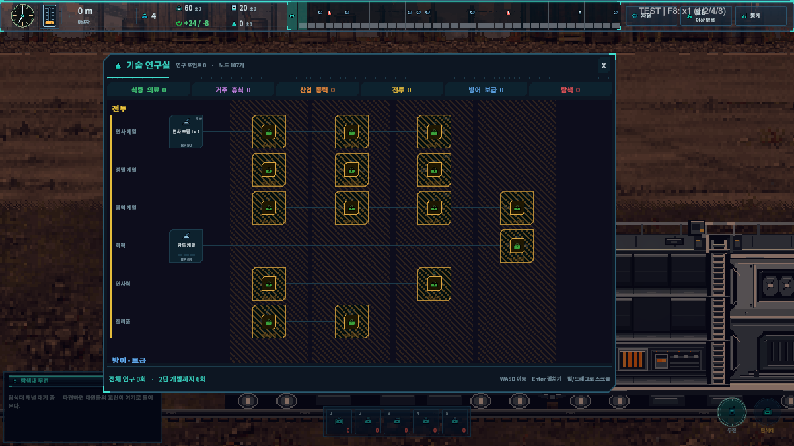
연구 선택 시 상세 패널
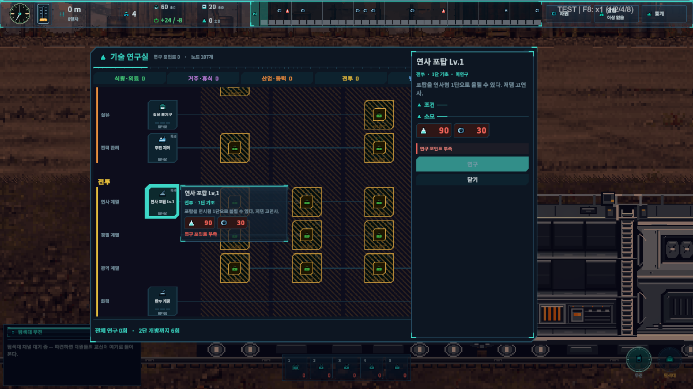
연사 포탑 Lv.1
1단 · RP 90 · 최대 Lv.1
포탑을 연사형 1단으로 올릴 수 있다. 저댐 고연사.
기관 포탑
2단 · RP 220 · 최대 Lv.1
근거리 초고연사 포탑. 장거리는 거의 못 맞힌다.
선행: 연사 포탑 Lv.1
연사 포탑 Lv.2
3단 · RP 450 · 최대 Lv.1
연사형 최종 단계(64 DPS).
선행: 기관 포탑
중기관 포탑
4단 · RP 800 · 최대 Lv.1
쏠수록 연사가 오른다. 첫 3초가 느리다.
선행: 연사 포탑 Lv.2
저격 포탑
2단 · RP 220 · 최대 Lv.1
장거리 단발 고댐 + 관통. 근거리에서 무력하다.
관통 포탑 Lv.1
3단 · RP 450 · 최대 Lv.1
투사체가 적을 뚫고 나간다.
선행: 저격 포탑
관통 포탑 Lv.2
4단 · RP 800 · 최대 Lv.1
4체 관통.
선행: 관통 포탑 Lv.1
산탄 포탑
2단 · RP 220 · 최대 Lv.1
근거리 확산 — 뭉친 무리를 훑는다.
제어 포탑 Lv.1
3단 · RP 450 · 최대 Lv.1
착탄 반경의 적을 둔화시킨다.
선행: 산탄 포탑
곡사 포탑
4단 · RP 800 · 최대 Lv.1
착탄 광역 · 중장거리. 발사 간격이 길다.
선행: 제어 포탑 Lv.1
제어 포탑 Lv.2
5단 · RP 1300 · 최대 Lv.1
EMP — 광역 강둔화 + 스턴.
선행: 곡사 포탑
탄두 개량
1단 · RP 68 · 최대 Lv.3
모든 포탑의 피해가 단계마다 +8%.
전자기 가속
5단 · RP 975 · 최대 Lv.3
포탑 피해 +13% / 단계.
선행: 탄두 개량
급탄 장치
2단 · RP 165 · 최대 Lv.3
모든 포탑의 연사가 단계마다 +5%.
냉각 총열
4단 · RP 600 · 최대 Lv.3
포탑 연사 +7% / 단계.
선행: 급탄 장치
잔해 회수
2단 · RP 165 · 최대 Lv.3
적을 격파할 때 얻는 고철이 단계마다 +10%.
분해 공구
3단 · RP 338 · 최대 Lv.3
격파 고철 +12% / 단계.
선행: 잔해 회수
방어 · 보급 ¶
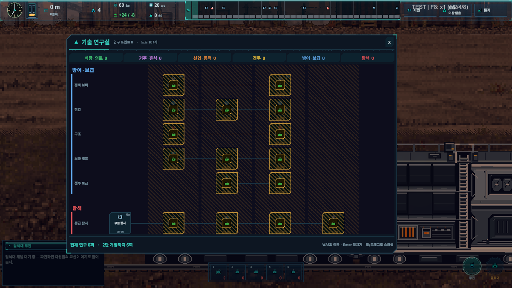
연구 선택 시 상세 패널
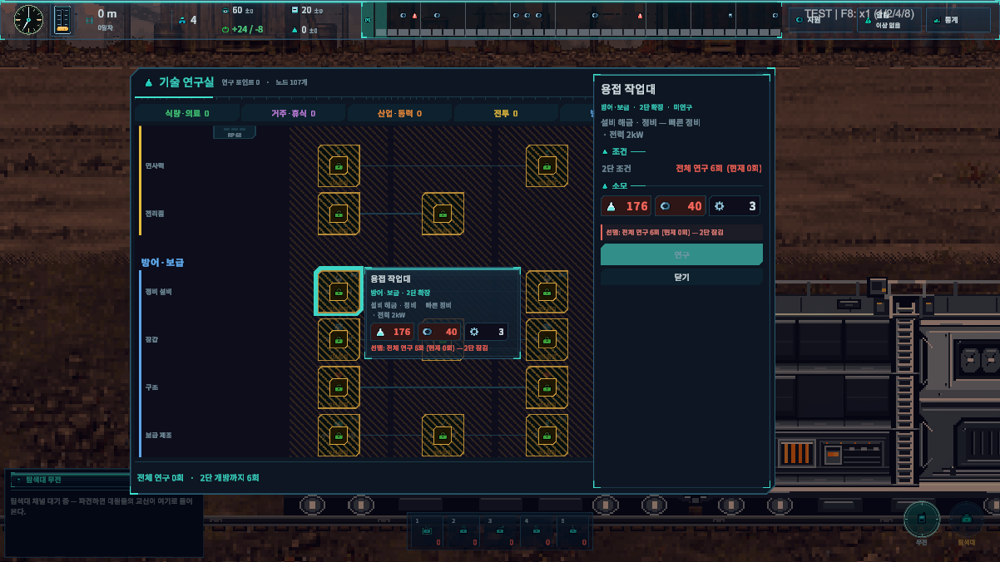
용접 작업대
2단 · RP 176 · 최대 Lv.1
설비 해금 · 정비 — 빠른 정비 · 전력 2kW
설비 외형 · 조작 UI →나노 수선대
4단 · RP 640 · 최대 Lv.1
설비 해금 · 정비 — 최고 정비 · 전력 4kW
선행: 용접 작업대
설비 외형 · 조작 UI →기관실 장갑
2단 · RP 165 · 최대 Lv.3
기관실 최대 체력 +250 · 받는 피해 −8% / 단계.
차체 내화 처리
3단 · RP 338 · 최대 Lv.3
모든 칸이 받는 피해 −4%p / 단계. 연구 장갑 합계는 35% 에서 멈춘다.
선행: 기관실 장갑
복합 장갑판
4단 · RP 600 · 최대 Lv.3
모든 칸이 받는 피해 −5%p / 단계.
선행: 차체 내화 처리
격벽 보강
2단 · RP 165 · 최대 Lv.3
모든 칸의 최대 체력 +8% / 단계.
구조 프레임
4단 · RP 600 · 최대 Lv.3
모든 칸의 최대 체력 +10% / 단계.
선행: 격벽 보강
수리 키트 조립
2단 · RP 220 · 최대 Lv.1
소모품 수리 키트 해금 — 가장 손상된 칸을 40 회복.
진정제 조제
3단 · RP 450 · 최대 Lv.1
소모품 진정제 해금 — 스트레스 높은 대원 3명 −35.
선행: 수리 키트 조립
각성제 합성
4단 · RP 800 · 최대 Lv.1
소모품 각성제 해금 — 전 대원 에너지 +50.
선행: 진정제 조제
고폭 탄약
3단 · RP 450 · 최대 Lv.1
소모품 탄약 팩 해금 — 90초 동안 전 포탑 피해 +30%.
과부하 셀
4단 · RP 800 · 최대 Lv.1
소모품 과부하 셀 해금 — 60초 동안 전력 +25kW.
선행: 고폭 탄약
탐색 ¶
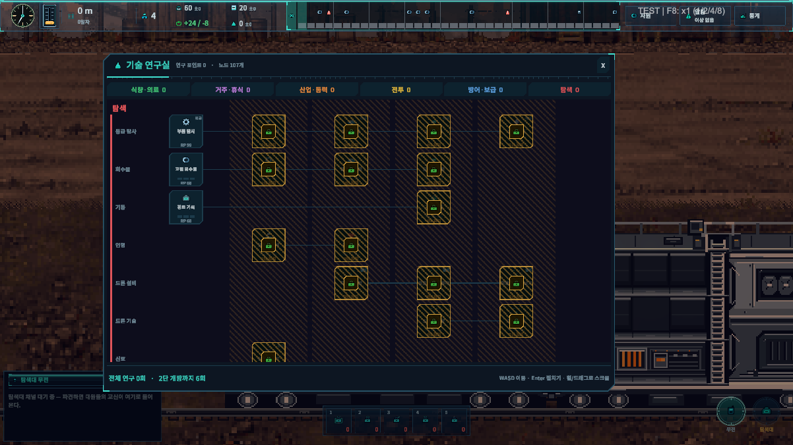
연구 선택 시 상세 패널
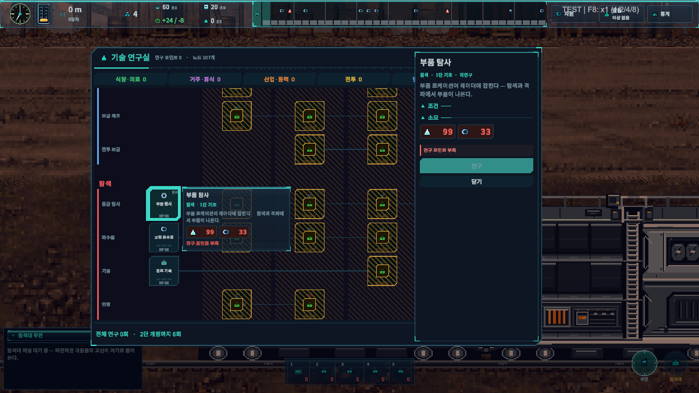
부품 탐사
1단 · RP 99 · 최대 Lv.1
부품 로케이션이 레이더에 잡힌다 — 탐색과 격파에서 부품이 나온다.
위협도 분석
2단 · RP 220 · 최대 Lv.1
레이더 신호로 전방 구역의 위협 밀도를 예보한다 — 어디에 설지 고를 수 있게 된다.
선행: 부품 탐사
합금 탐사
3단 · RP 495 · 최대 Lv.1
합금 로케이션이 잡힌다 — 탐색과 격파에서 합금이 나온다.
선행: 위협도 분석
모듈 탐사
4단 · RP 880 · 최대 Lv.1
모듈 로케이션이 잡힌다 — 탐색과 격파에서 모듈이 나온다.
선행: 합금 탐사
코어 탐사
5단 · RP 1430 · 최대 Lv.1
코어 로케이션이 잡힌다 — 탐색과 격파에서 코어가 나온다.
선행: 모듈 탐사
고철 회수율
1단 · RP 68 · 최대 Lv.3
탐색에서 가져오는 고철이 단계마다 +10%.
부품 회수율
2단 · RP 165 · 최대 Lv.3
부품 회수량 +15% / 단계.
선행: 고철 회수율
합금 회수율
3단 · RP 338 · 최대 Lv.3
합금 회수량 +15% / 단계.
선행: 부품 회수율
모듈 회수율
4단 · RP 600 · 최대 Lv.3
모듈 회수량 +15% / 단계.
선행: 합금 회수율
경로 기록
1단 · RP 68 · 최대 Lv.3
탐색대의 이동·탐색·복귀 시간이 단계마다 5% 준다.
기동 훈련
4단 · RP 600 · 최대 Lv.3
탐색 시간 −7% / 단계.
선행: 경로 기록
생존자 수색
2단 · RP 165 · 최대 Lv.3
탐색에서 생존자를 발견할 확률 +7%p / 단계.
구조 훈련
3단 · RP 338 · 최대 Lv.3
탐색 중 대원이 죽을 확률 −25% / 단계. 0 이 되지는 않는다.
선행: 생존자 수색
드론 관제탑
3단 · RP 360 · 최대 Lv.1
설비 해금 · 드론 — 확정 탐색 1왕복 180초 · 수확 ×0.45 · 전력 6kW
설비 외형 · 조작 UI →경량 정찰 드론대
4단 · RP 640 · 최대 Lv.1
설비 해금 · 드론 — 짧고 자주 1왕복 110초 · 수확 ×0.32 · 전력 3kW
선행: 드론 관제탑
설비 외형 · 조작 UI →화물 드론 격납고
5단 · RP 1040 · 최대 Lv.1
설비 해금 · 드론 — 길고 크게 1왕복 240초 · 수확 ×0.95 · 전력 9kW
선행: 경량 정찰 드론대
설비 외형 · 조작 UI →드론 적재량
4단 · RP 600 · 최대 Lv.3
드론이 가져오는 수확이 단계마다 +10%.
신호 해독기
2단 · RP 220 · 최대 Lv.1
신호 해독기(무인 설비) 해금 — 다음 구간의 적 유형 구성과 특성을 미리 읽는다.